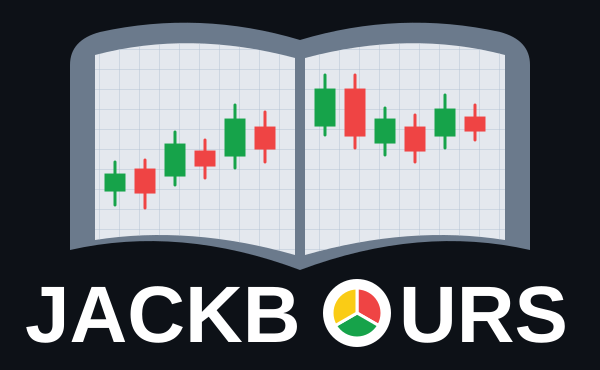
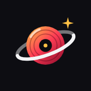

JACK BOURS · APPRENDRE LA BOURSE
Apprends la Bourse avec Jack,
sans risquer un centime.
Des leçons courtes, des quiz, des cartes mémoire et un vrai simulateur de marché avec 10 000 € fictifs. Pour comprendre avant d'y aller pour de vrai.
Tout pour apprendre, au même endroit
Pensé pour les grands débutants : on part de « c'est quoi une action ? » jusqu'aux stop-loss et au PER.
25 leçons en 5 niveaux
Des explications simples, des exemples chiffrés et un « à retenir » à la fin de chaque leçon.
Jack t'explique
Il lit les leçons à voix haute et t'explique chaque erreur dans les quiz.
Quiz et tests de passage
Valide chaque leçon, puis réussis le test (7/10) pour débloquer le niveau suivant.
Cartes mémoire
Le vocabulaire revient au bon moment (1, 3, 7, 15, 30 jours) pour ne plus l'oublier.
Simulateur de Bourse
10 entreprises inventées, un indice, un ETF, des dividendes, des actualités… et parfois un krach.
Missions
Premier achat, stop-loss, diversification, battre l'indice : 11 défis qui relient la théorie à la pratique.
Ta progression
Chaque niveau s'appuie sur le précédent.
Un marché qui vit, avec de l'argent fictif
- 🛒 Ordres au marché, à cours limité et stop-loss, avec des frais réalistes.
- 🕯️ Bougies japonaises, moyennes mobiles MM20 / MM50 et volume.
- 💶 Dividendes versés, PER et rendement de chaque entreprise.
- 📊 Ta performance comparée à l'indice JUNGLE 10.
- ⏩ Avance d'un jour, de cinq, ou laisse le temps défiler.

🌍 Le groupe Jack World en Bourse… pour de faux
NEW DUC, la maison mère, et ses filiales JACK22 Studio, J-DJ, Jack Radio, Jack Blabla, Jack Fusion, Jack Finance et Jack Bours ont leur propre cotation inventée. Un cours pour comprendre une holding, la croissance et le rendement, puis la pratique dans le simulateur.
Découvrir l'espace Jack WorldComment ça marche
Pas d'inscription, rien à installer : tout reste dans ton navigateur.
Apprends
Une leçon de 3 minutes, Jack la lit pour toi si tu veux.
Vérifie
Un quiz, puis les cartes mémoire pour ancrer le vocabulaire.
Pratique
Teste dans le simulateur ce que tu viens d'apprendre, sans risque.